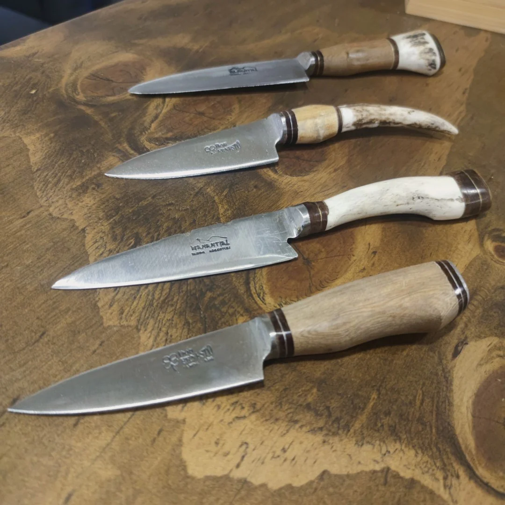

Lo mejor para tu hogar.
Contamos con un amplio catalogo de productos de la mejor calidad, 100% garantizado.

Driussi Artesanias es una empresa familiar, nace en las sierras de Córdoba, creando desde cuchillos hasta exhibidores de vino, de distintos articulos para el diseño de interiores hasta puertas y rejas para la seguridad de su hogar, toda su construcción con los mejores materiales y al mejor precio del mercado.